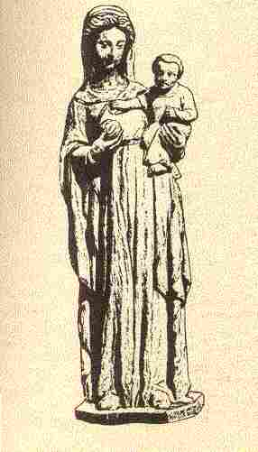

Itron Varia Follgoat

Ton
|
est l'un des chants de pélerinage étudiés dans CANNIBALES, TOMBEAUX ET PENDUS , un essai au format LIVRE DE POCHE 
de Christian Souchon |
is one of the pilgimage songs presented, in French, in CANNIBALES, TOMBEAUX ET PENDUS (Cannibals, graves and gallows) as a PAPERBACK BOOK
by Christian Souchon |
Cliquer sur le lien ou l'image - Click link or picture for more info
|
I
1. Yec'hed ha joa ganeoc'h va zad Petra rit aze mintin mad? o, o! Petra rit aze mintin mad? 2. Gwalc'hiñ doaloù ker gwenn hag erc'h ! Petra 'rit-c'hwi aze, va merc'h ? 3. - Me zo deut d'ho pediñ, va zad, Da vont evidon d'ar Follgoat 4. Ha mont diarc'hen ha war droad Ha war ho taoulin, mar gell pad 5. Eno e kefot ludu graet Diouzh ar galon hoc'h eus maget 6. - Petra, va merc'h paour, hoc'h eus graet, Pa viot evel-se luduet ? 7 .- Ur bugelig zo bet lazhet, Ha din, va zad, eo tamallet II 8. Un deiz an aotrou Pouligwenn Oa aet da "zersal" 'raok e lein 9. - Setu amañ ur c'had kignet, Pe ur bugelig gwalennet 10. Krouget eo ouzh skourr ar wezenn E kerc'henn e c'houg ar seizenn 11. Hag eñ da gaout e itron, O soñjal du en e galon 12. - Sellit ! ur bugel paour lazhet ! Piv, anv Doue, 'n eus hen ganet ? 13. An itron, hep lavarout ger, Ez eas d'ar vereuri e-berr : 14. - Mat ar bed ganeoc'h, mereurez Dont 'ra ho kanab brav er-maez 15. - Va c'hanab brav 'maez na sav ket Mont a ra holl gant ho koulmed 16. - Pelec'h int aet ho merc'hed-c'hwi Pa na welan nemet hoc'h-c'hwi ? 17. - Div zo er stêr gant an dilhad Ha div all zo o paluc'hat 18. Ha div all zo o paluc'hat Hag an div all zo o kribat 19. Mari-Fañchonig, va nizez, Honnezh zo er gwele diaes |
20. Er gwele
klañv ez eo chomet
Eizh pe nav deiz zo tremenet 21. - Digorit din, va mererez, Hag e welin va filhorez 22. - Va filhorez, din livirit, Pelec'h 'mañ 'n droug a zamantit ? 23. - Kreiz-tre va c'hof ha va c'halon, Emañ va droug, va mamm baeron 24. - Savit, savit, va filhorez, It d' an Tad Frañsez da goves 25. Kovesait mat ho pec'hed Hag eveshait mar karet 26. - Evit pec'herez, n'em on ket Eizhteiz zo on bet koveset 27. - Gevier din na livirit ket Ur pec'hed bras hoc'h eus c'hwi graet 28. C'hwi zo bet mintin-mat d'ar c'hoad Ruz eo ho poutoù gant ar gwad ! III 29. - Pachig bihan, lavar din-me, Petra 'z a gant ar paz-se ? 30. - Ho mereurien a Wigourvez, Ar c'hrouger hag ho filhorez 31. Kriz vije neb ha na ouelje War dachenn Follgoat, pa zeue 32. Pa zeue ar plac'h pemzek vloaz , E-kreiz daou archer da grougañ 33. Ur c'hwrac'hig kozh paour dirazi O terc'hel ur gouloù dezhi 34. Hag hi, o vont, a lavare : - Ne oa ket din ar bugel-se 35. An itron war-lerc'h o c'houlenn Truez d'he filhorez a-grenn : 36. - Laoskit ganin va filhorez : Reiñ a rin deoc'h, arc'hant he fouez 37. Ha mar na blij deoc'h kement-se Me 'roi deoc'h pouez va inkane 38. Me 'roi deoc'h pouez va inkane Ar plac'h ha me war he c'horre 39. - Ho filhorez n'ho pezo ket Neb a lazhas a vez lazhet En caractères gras , changements significatifs par rapport au MS |
IV
40. Pa 'z ea 'r senesal da verennañ Ez eas ar c'hrouger d'he c'hrougañ 41. A-benn ur pennadig goude Dont a reas d'e gaout-e : 42. - Aotrou Senesal, me ho ped, Mari-Fañchonig na varv ket 43. Pa daolan va zroad war he skoaz Distreiñ da c'hoarzhin ouzhin 'ra 44. - Taolit-hi ha didaolit-hi Kasit-hi d'ar fagoderi 45. - Taolomp-hi ha didaolomp-hi Greomp tan ha moged d'he leskiñ 46. A-benn ur pennadig goude Dont a rae 'r c'hrouger adarre 47. - Aotrou Senesal, me ho ped, Mari-Fañchonig na varv ket! 48. 'Mañ en tan betek e divronn C'hoarzhin a ra leizh he c'halon 49. - Pa gredin pezh a leveret Ar c'habon-mañ 'n devo kanet 50. (Ur c'habon rostet war ur plad, Ha debret nemet e zaoudroad) 51. Ar senesal oa souezhet : Ar c'habon en devoa kanet 52. - Mari-Fañchonig, me ho ped, Me zo faziet, c'hwi n'oc'h ket 53. Me zo faziet, c'hwi n'oc'h ket Petra zo en tan d'ho miret ? 54. - An Itron Varia-Follgoat Zo 'skubañ dindan va daoudroad 55. Ar Werc'hez, mamm ar gristenien , Zo 'skubañ en-dro d'am c'herc'henn 56. - Ret eo kas prim da Wigourvez Kas prim da di ar vereurez 57. Kas prim da di ar vereurez Da c'houzout piv eo pec'heurez 58. Tremenet oant holl dre an tan Ha nikun na lakeas mann 59. Tremenet holl hep lakaat mann : Nemet ar vatezh hec'h-unan . En italiques , passages sans équivalent dans le MS |
Variantes tirées du premier carnet de collecte de La Villemarqué

|
P. 281
QUISQUIDI II (8) An aotroù a zavas mintin mat Da voned da chaseal ur had: (9) Koad ar Jardin pe doa chaset Ur hadig penn-gwenn 'n deus kavet: (10) Eñ res an dro parkoù hag er fos A gavez ur plac'h mailhuret kloz . (11) N aotroù Kiskidi dalc'h m'he welas Da gaout e itron eñ yeaz. (12) - Demat deoc'h-hu, ma Itronez, Setu amañ zo ur vinourez. P. 282 (13) N intronez, dalc'h m'he welas, Da gaout he merour ez yeas. (14) - Yec'hed mad deoc'h-hu, ma merourez, Dont a ra ho kanab brav er-maes? (15) - Ma c'hanab brav er-maes ne zeont ket: Mont e rant holl gand ho koulmed. (16) - Pelec'h ema aet ho merc'hed-hu? Pa ne welan ket nemetoc'h-hu? (17) - Div eo aet d'ar ster gant an dilhad, Ha div all a zo o palluc'had, (18) Hag an div all a zo o kribat. (19) (20) Mari-Fransoazig, ho filhourez, Honnez a zo 'n he gwele diaez! (21) - Digorit din 'n nor, ma merourez, Ma yan men da wel ma filhorez (a) Rag 'm-eus aon na vo pec'herez. - Ho filhorez pec'herez n'eo ket Rag n'he-deus ket war-nes evit boud. P. 283 (22) - Dallit-hu, ma filhorez, Pelec'h eo an drouk a zamantez? (23) - Kreiz-tre ma bouzelloù ha ma c'halon, Ema ma drouk, ma mamm-baeron. - (b) Hi daolas he dorn war he c'halon, Ha strinkas al laez deuz he divvron. He dorn war he galon 'neus taolet Hag ur bugel 'neus tennet. (24) - Savit alese, ma filhorez, Da vonet da Zant-Fransez da goves (25) Kar c'hwi a zo sur ur bec'herez. - (c) Mari-Fransoazig a lavare War an uhellañ pazenn pa bigne: - Mez, me wel maner Kiskildri! Hag, amañ, 'n aotrou 'n e studi. Rag ma ve an tan deus-e deviñ! Mar yin d'ar marv eñ zo kaoz din. N'ede nemed seizh merc'hed en tiad; Ma oa ar vravañ wiske dilhat Hag a ya d'ar marv da gentañ. Kemend a laroc'h d'am c'hoar Loiza Na heulio ket at vuhez a ra. P. 284 Na heulio ket ar festoù an noz, Ispisial d'ar zadorn d'an noz, Balamour ve ar zul, antronoz. Variante notée au crayon dans les interlignes An aotrou senechal II (8-2) Zo aet da chaseal goude lein. (12-1) - Dallit, dallit, ma itronez, Setu ur paor-kaez minorez (12-2) Ur vinourez paour hag he lazhet. - (d) Hag hi da soñjal 'n he kalon Piv oa brazez er c'hañtoñ. - Ma nizes zo 'n he gwele klañv chomet Eizh pe nav miz zo tremenet. - Pec'herez Fanchonik n'eo ket! Mar d'eo 'nan, homañ na n'eo ket. (25) - Kofesit mat ho pec'hed Hag e vefec'h mat mar karit. (o) Pe hent-all e vihot devet. - |
P. 301.1
JANEDIK AR MORRU III (e) 'N Itron Poullgwenn (8) a c'houlenne Gant he fajik 'n deiz a oe: (29) -Pajik bihan, lavar din-me, Petra ya gant ar pavez-se? (30-2) - Janedik ar Morruz, ho matez Hag a-neuze ho filhorez (33) Zo 'vont da grougo he tre tri Hag ar bugel bihan dirazi . - (34) Hag hi a lare dre ma ye: - Ne ket din-me eo ar bugel-se! (f) Bet eo kavet e-toue ma liñseriaoù Keun ha glac'har kalon-me zav. Terzhienn bep tri deiz voa ganin N'ouien petra ober d'outi Hag ar vatez oa en ti ganin 'Deus laret gwiskad 'n hiviz ganti Birviken terzhienn na greñvin mui. P. 301.2 Ha me, siwazh, em-eus sentet Hag ur kreadur e ma gwele zo kavet. - (35) (36) - Losket ma filhorez ganin d'am ger Hag e rin d'oc'h poez he afer. (37) Mar n'oc'h ket koutant kemend-se Me rayo d'eoc'h samm ma inkane Ha pouez an dibr zo war he c'hore! (g) - N'oc'h ket ker braz a ouarnerez A dennfec'h den d'oc'h-kreiz al lez! - Me zo ken braz a ouarnerez Hag a zo an den 'barzh al lez. IV (40) Pa yez ar senechal da merennañ Ha yez ar bourrev d'he c'hrougañ. (41) A-benn ur boutadig goude-se A te ar bourrev d'e c'haout tre. (42)- Aotroù Senechal ma ekskusit: Janedig ar Morru ne varv ket. P. 302.1 (43) Graet 'meus teir zro war he divskoaz Nemed c'hoarziñ d'ouzhin na ra! (44-2) - Kasit du-se da fargodiri! (45-2) Grait tan ha moged d'he leskiñ! (46) A-benn ur boutadig goude-se A te ar bourrev d'o c'haout tre. (47) - Aotroù Senechal, ma ekskusit Janedig ar Morru na varv ket: (48) Ema barzh an tan betek he divvron Ha ra nemet c'hoarzhiñ leizh he c'halon! (49) - Kent a ve da greden kemend-se Ma ve kanet gant ar c'hapon-mañ. - (50) 'R c'hapen rostet war ar plad Hag eñ debret-toud 'med e zaoudroad. (51) Ar senechal voa souezhet: R c'hapen rostet 'n-defe kanet! (52) -Janedik Morru, m'ekskuzit Me zo failhet, c'hwi n'emaoc'h ket! (53-2) Petra zo en tan deus ho mired? (54) - Itron Varia ar Follgoat A zo o skubañ dindan ma daoudroad. (55) Hag an Itron Varia Gwaien Zo o skubañ tan dindan va c'herc'henn. P. 302.2 (h) Me garfen 'ti ma mamm ha ma zad E'it mont d'ar pardon d'ar Follgoat. - Me ray deoc'h-hu ma inkane, Pe ma c'haros, unan anezhe! - Na war inkane, na war karos! Nemed war ma daoulin noazh! |
P. 302.2
OH, BONJOUR MA MAMM, MA ZAD I (1) - Oh, bonjour, ma mamm ha ma zad! - Petra rit aze ken mintin-mat? (2) O walc'hiñ dilhat ken gwenn hag erc'h? Petra rit aze ma merc'h, ma merc'h? (3) - Me zo deuet d'ho kavout, ma zat, Lared mond evidon d'ar Follgoat. (4) Di allañ diarc'hen ha war-droad, War benn ho daoulin, mar galfec'h padal. (5) Hag eno e kavfec'h ludu graet Dimeus ar galonik 'peuz maget. P. 306.1 (6) - Petra ma merc'h paour ho-peus-hu graet Mar e vec'h mod-se luduet? (i) An derzhienn an tri deiz vije ganin. Gouarnerez an aotroù 'n eus laret din: "Gwiskit... Na ait-c'hwi prompt 'n ho kwele! Birviken terzhienn n'ho-po, goude." (7) Ur bugel bihan zo bet kavet Oa laket tre plouz ha kolret . Din-me, tadig paour, 'ma tamallet. - ********* (31) Ha kriz vije 'r galon na ouelje War dachenn Follgoat neb a vije, (32) O weled ur plac'hik pevarzeg bloaz , O vont gant daou archer da grougañ, (j) Med o vont da vout krouget tre tri, (35) Hag he mamm-gaer o vont war he lerc'h Hag a c'houle gras he filhorez: (36) - Loskit ma filhorez dont d'ar ger! Me lako poez war pouez aour. (k) - Bouit...gouarnerez C'hwi n'ho-po ket gras d'ur pec'herez. - (40) Pa oa aet 'r senechal da verennañ A oa laret d'ar bourev he c'hrougañ. (43) Pa a daolas he troad war he skoaz, Distro da c'hoarzhiñ d'outañ a ra. P. 306.2 (42) (47) Aotroù Senechal, am ekskuzit, Ar plac'h pevarzek bloaz n'eus ket pec'het. (43-1) Pe a deulan... (45-1) O taollomp-hi ha didaollomp-hi (44-2) Ha ni kaso d'ar fagodiri (45-2) Ha ni c'hwezo an tan diwarnezhi. - (48) Pa oa... Walc'h he c'halon. (52-1) - Plac'hig pevarzeg din lavarit (53-2) Ha petra zo kirieg ne varvfec'h ket? - (58) An holl a oa paset dre an tan Ha nikun anezhe ne lakaez van. (59) 'Med ar ouarnourez hag an aotroù : Re-se oa chomet ennañ o-daou! (l) Aes 'walc'h e vez lared traoù: Red e vez kavoud 'raok an testoù. (57) Red eo kas maner Drivien Evit goût piv a oa ar bec'herien. (58.1) Holl a oant tremenet an tan. Variante (m) Holl e oant tremenet an tan; Nemed ar c'hure a jom ennañ; (59) Nemed matez an ti, hi-unan Hag a jom e-barzh an tan! En italiques , passages sans équivalent dans le Barzhaz En caractères gras , changements significatifs par rapport au MS |